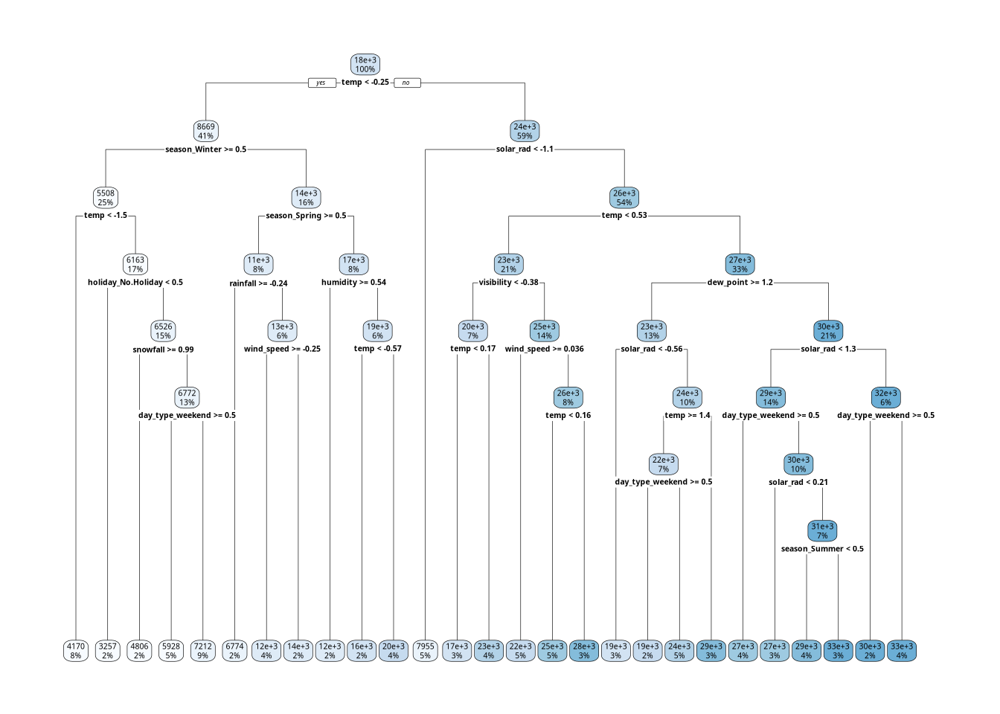
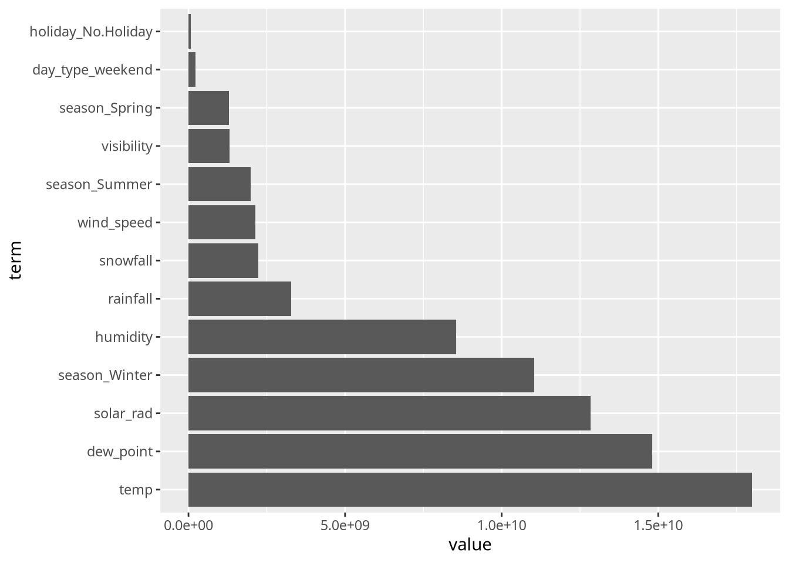

suppressPackageStartupMessages(library(tidyverse))
suppressPackageStartupMessages(library(tidymodels))
suppressPackageStartupMessages(library(baguette))ST-558 Homework 9
Intro
The data processing and transformations from my version of Homework 8 have been corrected. Now all models will be correctly fit on transformed data with daily observations instead of the original hourly observations. Further, any incorrect predictors, like hour or Functioning Day, have been removed from the transformed data, and observations on non-functioning days have been dropped given there were no bike rentals on those days.
Load libraries
Parallel Processing
suppressPackageStartupMessages(library(future))
suppressPackageStartupMessages(library(doFuture))
plan(multisession, workers = parallel::detectCores() - 1)
registerDoFuture()
getDoParWorkers()[1] 15Read in Data
bike_data <- read_csv("https://www4.stat.ncsu.edu/~online/datasets/SeoulBikeData.csv",
locale = locale(encoding = "latin1"))Rows: 8760 Columns: 14
── Column specification ────────────────────────────────────────────────────────
Delimiter: ","
chr (4): Date, Seasons, Holiday, Functioning Day
dbl (10): Rented Bike Count, Hour, Temperature(°C), Humidity(%), Wind speed ...
ℹ Use `spec()` to retrieve the full column specification for this data.
ℹ Specify the column types or set `show_col_types = FALSE` to quiet this message.Convert Date into a date format
Recode Seasons, Holiday, and Functioning Day as factors
bike_data <- bike_data |> mutate(Date = lubridate::dmy(Date),
Seasons = factor(Seasons),
Holiday = factor(Holiday),
`Functioning Day` = factor(`Functioning Day`))Rename variables
bike_data <- bike_data |> rename(date = Date,
bike_count = `Rented Bike Count`,
hour = Hour,
temp = `Temperature(°C)`,
humidity = `Humidity(%)`,
wind_speed = `Wind speed (m/s)`,
visibility = `Visibility (10m)`,
dew_point = `Dew point temperature(°C)`,
solar_rad = `Solar Radiation (MJ/m2)`,
rainfall = `Rainfall(mm)`,
snowfall = `Snowfall (cm)`,
season = Seasons,
holiday = Holiday,
func_day = `Functioning Day`)Transform Data
Note, the variable Functioning Day also renamed func_day is dropped in the grouping. Also, rainfall and snowfall means were not calculated with the rest of the mean weather variables. Drop records on non-functioning days or days with no bike rentals.
bikes <- bike_data |>
filter(func_day == "Yes") |>
select(-func_day) |>
group_by(date, season, holiday) |>
summarize(bike_count = sum(bike_count, na.rm = TRUE),
rainfall = sum(rainfall, na.rm = TRUE),
snowfall = sum(snowfall, na.rm = TRUE),
across(c(temp, humidity, wind_speed, visibility, dew_point, solar_rad),
~ mean(.x, na.rm = TRUE), .names = "{.col}"),
.groups = "drop",)
bikes# A tibble: 353 × 12
date season holiday bike_count rainfall snowfall temp humidity
<date> <fct> <fct> <dbl> <dbl> <dbl> <dbl> <dbl>
1 2017-12-01 Winter No Holiday 9539 0 0 -2.45 45.9
2 2017-12-02 Winter No Holiday 8523 0 0 1.32 62.0
3 2017-12-03 Winter No Holiday 7222 4 0 4.88 81.5
4 2017-12-04 Winter No Holiday 8729 0.1 0 -0.304 52.5
5 2017-12-05 Winter No Holiday 8307 0 0 -4.46 36.4
6 2017-12-06 Winter No Holiday 6669 1.3 8.6 0.0458 70.8
7 2017-12-07 Winter No Holiday 8549 0 10.4 1.09 67.5
8 2017-12-08 Winter No Holiday 8032 0 0 -3.82 41.8
9 2017-12-09 Winter No Holiday 7233 0 0 -0.846 46
10 2017-12-10 Winter No Holiday 3453 4.1 32.5 1.19 69.7
# ℹ 343 more rows
# ℹ 4 more variables: wind_speed <dbl>, visibility <dbl>, dew_point <dbl>,
# solar_rad <dbl>Split Data
set.seed(1)
bike_split <- initial_split(bikes, prop = 0.75, strata = season)
bike_train <- training(bike_split)
bike_test <- testing(bike_split)
bike_10_fold <- vfold_cv(bike_train, 10)Fitting MLR Models
First Linear Model and Recipe
Model uses all variables to predict bike_count.
mlr_recipe1 <-
recipe(bike_count ~ ., data = bike_train) |>
update_role(date, new_role = "ID") |>
step_date(date, features = c("dow")) |>
step_mutate(day_type = factor(
if_else(date_dow %in% c("Sat", "Sun"), "weekend", "weekday"),
levels = c("weekday", "weekend"))
) |>
step_rm(date_dow) |>
step_normalize(all_numeric_predictors()) |>
step_dummy(season, holiday, day_type)Second Linear Model and Recipe
Adding interaction terms between season:holiday, season:temp, and temp:rainfall to model 1.
mlr_recipe2 <-
mlr_recipe1 |>
step_interact(terms = ~ starts_with("season")*starts_with("holiday") +
starts_with("season")*temp +
temp*rainfall)Third Linear Model and Recipe
Added quadratic terms to all numeric variables from model 2.
mlr_recipe3 <-
mlr_recipe2 |>
step_poly(rainfall, snowfall, temp, humidity, wind_speed, visibility, dew_point, solar_rad,
degree = 2)Set up linear regression engine, workflow, and fit models using 10-fold CV split
linear_spec <- linear_reg() |> set_engine("lm")
mlr_workflow1 <- workflow() |> add_recipe(mlr_recipe1) |> add_model(linear_spec)
mlr_workflow2 <- workflow() |> add_recipe(mlr_recipe2) |> add_model(linear_spec)
mlr_workflow3 <- workflow() |> add_recipe(mlr_recipe3) |> add_model(linear_spec)
mlr_fit1 <- mlr_workflow1 |> fit_resamples(bike_10_fold, metrics = metric_set(rmse, mae))
mlr_fit2 <- mlr_workflow2 |> fit_resamples(bike_10_fold, metrics = metric_set(rmse, mae))→ A | warning: prediction from rank-deficient fit; consider predict(., rankdeficient="NA")mlr_fit3 <- mlr_workflow3 |> fit_resamples(bike_10_fold, metrics = metric_set(rmse, mae))Training Performance Metrics
rbind(
mlr_fit1 |> collect_metrics(),
mlr_fit2 |> collect_metrics(),
mlr_fit3 |> collect_metrics())# A tibble: 6 × 6
.metric .estimator mean n std_err .config
<chr> <chr> <dbl> <int> <dbl> <chr>
1 mae standard 3256. 10 156. pre0_mod0_post0
2 rmse standard 4128. 10 186. pre0_mod0_post0
3 mae standard 2304. 10 156. pre0_mod0_post0
4 rmse standard 3248. 10 320. pre0_mod0_post0
5 mae standard 2221. 10 157. pre0_mod0_post0
6 rmse standard 3017. 10 295. pre0_mod0_post0Select Best MLR Model to Predict Test Data and Final Performance Metrics
mlr_final_fit <- mlr_workflow3 |> last_fit(bike_split, metrics = metric_set(rmse, mae))
mlr_final_fit |> collect_metrics()# A tibble: 2 × 4
.metric .estimator .estimate .config
<chr> <chr> <dbl> <chr>
1 rmse standard 2745. pre0_mod0_post0
2 mae standard 2021. pre0_mod0_post0LASSO Model
lasso_recipe <- mlr_recipe1
lasso_spec <- linear_reg(penalty = tune(), mixture = 1) |> set_engine("glmnet")
lasso_workflow <- workflow() |> add_recipe(lasso_recipe) |> add_model(lasso_spec)
lasso_grid <- lasso_workflow |>
tune_grid(resamples = bike_10_fold,
grid = grid_regular(penalty(range = c(-3, 1)), levels = 400),
control = control_grid(save_pred = TRUE),
metrics = metric_set(rmse, mae))
lasso_grid |>
collect_metrics() |>
filter(.metric == "rmse") |>
ggplot(aes(penalty, mean, color = .metric)) +
geom_line()
lasso_grid |> collect_metrics() |>
group_by(.config, .metric) |>
summarize(mean = mean(mean, na.rm=TRUE), .groups = "drop") |>
pivot_wider(names_from = .metric, values_from = "mean") |>
arrange(rmse, mae)# A tibble: 400 × 3
.config mae rmse
<chr> <dbl> <dbl>
1 pre0_mod001_post0 3245. 4105.
2 pre0_mod002_post0 3245. 4105.
3 pre0_mod003_post0 3245. 4105.
4 pre0_mod004_post0 3245. 4105.
5 pre0_mod005_post0 3245. 4105.
6 pre0_mod006_post0 3245. 4105.
7 pre0_mod007_post0 3245. 4105.
8 pre0_mod008_post0 3245. 4105.
9 pre0_mod009_post0 3245. 4105.
10 pre0_mod010_post0 3245. 4105.
# ℹ 390 more rowslasso_best <- lasso_grid |> select_best(metric = "rmse")
lasso_final_fit <- lasso_workflow |>
finalize_workflow(lasso_best) |>
last_fit(bike_split, metrics = metric_set(rmse, mae))
lasso_final_fit |> collect_metrics()# A tibble: 2 × 4
.metric .estimator .estimate .config
<chr> <chr> <dbl> <chr>
1 rmse standard 4110. pre0_mod0_post0
2 mae standard 3135. pre0_mod0_post0Regression Tree Model
tree_recipe <- mlr_recipe1
tree_model <- decision_tree(tree_depth = tune(),
cost_complexity = tune(),
min_n = tune()) |>
set_engine("rpart") |>
set_mode("regression")
tree_workflow <- workflow() |> add_recipe(tree_recipe) |> add_model(tree_model)
tree_grid <- grid_regular(tree_depth(),
cost_complexity(),
min_n(range = c(10, 20)),
levels = c(50, 50, 3))
tree_fits <- tree_workflow |>
tune_grid(resamples = bike_10_fold,
grid = tree_grid,
metrics = metric_set(rmse, mae))
tree_fits |> collect_metrics() |>
group_by(.config, .metric) |>
summarize(mean = mean(mean, na.rm=TRUE), .groups = "drop") |>
pivot_wider(names_from = .metric, values_from = "mean") |>
arrange(rmse, mae)# A tibble: 2,250 × 3
.config mae rmse
<chr> <dbl> <dbl>
1 pre0_mod1601_post0 2879. 3891.
2 pre0_mod1604_post0 2879. 3891.
3 pre0_mod1607_post0 2879. 3891.
4 pre0_mod1610_post0 2879. 3891.
5 pre0_mod1613_post0 2879. 3891.
6 pre0_mod1616_post0 2879. 3891.
7 pre0_mod1619_post0 2879. 3891.
8 pre0_mod1646_post0 2874. 3892.
9 pre0_mod1649_post0 2874. 3892.
10 pre0_mod1652_post0 2874. 3892.
# ℹ 2,240 more rowstree_best <- select_best(tree_fits, metric = "rmse")
tree_final_fit <- tree_workflow |>
finalize_workflow(tree_best) |>
last_fit(bike_split,
metrics = metric_set(rmse, mae))
tree_final_fit |> collect_metrics()# A tibble: 2 × 4
.metric .estimator .estimate .config
<chr> <chr> <dbl> <chr>
1 rmse standard 3514. pre0_mod0_post0
2 mae standard 2699. pre0_mod0_post0Bagged Tree Model
bag_recipe <- mlr_recipe1
bag_spec <- bag_tree(tree_depth = tune(),
min_n = tune(),
cost_complexity = tune()) |>
set_engine("rpart") |>
set_mode("regression")
bag_workflow <- workflow() |>
add_recipe(bag_recipe) |>
add_model(bag_spec)
bag_grid <- grid_regular(tree_depth(),
min_n(range = c(10, 30)),
cost_complexity(),
levels = c(5, 3, 15))
suppressMessages({
bag_fit <- bag_workflow |>
tune_grid(resamples = bike_10_fold,
grid = bag_grid,
metrics = metric_set(rmse, mae))
})
bag_fit |> collect_metrics() |>
group_by(.config, .metric) |>
summarize(mean = mean(mean, na.rm=TRUE), .groups = "drop") |>
pivot_wider(names_from = .metric, values_from = "mean") |>
arrange(rmse, mae)# A tibble: 225 × 3
.config mae rmse
<chr> <dbl> <dbl>
1 pre0_mod163_post0 2274. 2894.
2 pre0_mod067_post0 2348. 2979.
3 pre0_mod133_post0 2316. 2985.
4 pre0_mod013_post0 2362. 3018.
5 pre0_mod118_post0 2367. 3021.
6 pre0_mod115_post0 2379. 3025.
7 pre0_mod040_post0 2360. 3044.
8 pre0_mod073_post0 2436. 3055.
9 pre0_mod178_post0 2401. 3060.
10 pre0_mod097_post0 2378. 3064.
# ℹ 215 more rowsbag_best <- select_best(bag_fit, metric = "rmse")
bag_final_fit <- bag_workflow |>
finalize_workflow(bag_best) |>
last_fit(bike_split, metrics = metric_set(rmse, mae))Registered S3 method overwritten by 'butcher':
method from
as.character.dev_topic genericsbag_final_fit |> collect_metrics()# A tibble: 2 × 4
.metric .estimator .estimate .config
<chr> <chr> <dbl> <chr>
1 rmse standard 2821. pre0_mod0_post0
2 mae standard 2192. pre0_mod0_post0Random Forest Model
rf_recipe <- mlr_recipe1
rf_spec <- rand_forest(mtry = tune()) |>
set_engine("ranger", oob.error = TRUE, importance = "impurity") |>
set_mode("regression")
rf_workflow <- workflow() |>
add_recipe(rf_recipe) |>
add_model(rf_spec)
rf_fit <- rf_workflow |>
tune_grid(resamples = bike_10_fold,
grid = 1000,
metrics = metric_set(rmse, mae))i Creating pre-processing data to finalize 1 unknown parameter: "mtry"rf_fit |> collect_metrics() |>
group_by(.config, .metric, mtry) |>
summarize(mean = mean(mean, na.rm=TRUE), .groups = "drop") |>
pivot_wider(names_from = .metric, values_from = "mean") |>
arrange(rmse, mae)# A tibble: 13 × 4
.config mtry mae rmse
<chr> <int> <dbl> <dbl>
1 pre0_mod11_post0 11 2270. 2910.
2 pre0_mod12_post0 12 2257. 2912.
3 pre0_mod10_post0 10 2276. 2915.
4 pre0_mod09_post0 9 2297. 2924.
5 pre0_mod08_post0 8 2319. 2936.
6 pre0_mod13_post0 13 2287. 2937.
7 pre0_mod07_post0 7 2354. 2968.
8 pre0_mod06_post0 6 2378. 3002.
9 pre0_mod05_post0 5 2428. 3042.
10 pre0_mod04_post0 4 2474. 3107.
11 pre0_mod03_post0 3 2576. 3211.
12 pre0_mod02_post0 2 2873. 3550.
13 pre0_mod01_post0 1 4164. 4905.rf_best <- select_best(rf_fit, metric = "rmse")
rf_final_fit <- rf_workflow |>
finalize_workflow(rf_best) |>
last_fit(bike_split, metrics = metric_set(rmse, mae))
rf_final_fit |> collect_metrics()# A tibble: 2 × 4
.metric .estimator .estimate .config
<chr> <chr> <dbl> <chr>
1 rmse standard 2778. pre0_mod0_post0
2 mae standard 2254. pre0_mod0_post0ranger_fit <- rf_final_fit |> extract_fit_engine()
oob_rmse <- sqrt(ranger_fit$prediction.error)
oob_rmse[1] 2904.169MLR Coefficient Table
mlr_final_fit |> extract_fit_parsnip() |> tidy() |> knitr::kable()| term | estimate | std.error | statistic | p.value |
|---|---|---|---|---|
| (Intercept) | 16484.0175 | 1659.0167 | 9.9360166 | 0.0000000 |
| season_Spring | -1335.1049 | 2327.2722 | -0.5736780 | 0.5667367 |
| season_Summer | 18996.7458 | 3779.0857 | 5.0268099 | 0.0000010 |
| season_Winter | -7260.0972 | 2796.1132 | -2.5964962 | 0.0100143 |
| holiday_No.Holiday | 5274.9498 | 1513.5714 | 3.4851014 | 0.0005872 |
| day_type_weekend | -2631.1226 | 411.5543 | -6.3931354 | 0.0000000 |
| season_Spring_x_holiday_No.Holiday | -2928.0053 | 2374.3288 | -1.2331928 | 0.2187412 |
| season_Summer_x_holiday_No.Holiday | -1723.2224 | 3291.8717 | -0.5234780 | 0.6011370 |
| season_Winter_x_holiday_No.Holiday | -3399.9606 | 2030.5130 | -1.6744343 | 0.0953812 |
| season_Spring_x_temp | 5344.3658 | 1120.6035 | 4.7691854 | 0.0000033 |
| season_Summer_x_temp | -16230.8999 | 2302.2220 | -7.0501018 | 0.0000000 |
| season_Winter_x_temp | -4098.7711 | 2894.0836 | -1.4162587 | 0.1580295 |
| temp_x_rainfall | -1569.0516 | 510.5321 | -3.0733654 | 0.0023676 |
| rainfall_poly_1 | -30271.0712 | 7570.2030 | -3.9987133 | 0.0000854 |
| rainfall_poly_2 | 16168.7483 | 3490.1295 | 4.6327073 | 0.0000060 |
| snowfall_poly_1 | -4774.7799 | 3311.1524 | -1.4420296 | 0.1506311 |
| snowfall_poly_2 | -560.7484 | 3225.9324 | -0.1738252 | 0.8621531 |
| temp_poly_1 | 71045.9034 | 63864.4553 | 1.1124483 | 0.2670870 |
| temp_poly_2 | -16070.0268 | 17652.4369 | -0.9103574 | 0.3635708 |
| humidity_poly_1 | -2292.4267 | 22486.3908 | -0.1019473 | 0.9188858 |
| humidity_poly_2 | -7746.9663 | 6526.8428 | -1.1869393 | 0.2364551 |
| wind_speed_poly_1 | -8548.2021 | 3401.3233 | -2.5131989 | 0.0126375 |
| wind_speed_poly_2 | 1254.3386 | 3263.7584 | 0.3843234 | 0.7010878 |
| visibility_poly_1 | 7646.2911 | 4409.1789 | 1.7341758 | 0.0842039 |
| visibility_poly_2 | 339.7514 | 3080.5998 | 0.1102874 | 0.9122760 |
| dew_point_poly_1 | 12575.2629 | 74601.5556 | 0.1685657 | 0.8662839 |
| dew_point_poly_2 | -110.7961 | 12790.7616 | -0.0086622 | 0.9930960 |
| solar_rad_poly_1 | 46143.2510 | 5847.2829 | 7.8914005 | 0.0000000 |
| solar_rad_poly_2 | -4001.4800 | 3597.7567 | -1.1122153 | 0.2671869 |
LASSO Coefficient Table
lasso_final_fit |> extract_fit_parsnip() |> tidy() |> knitr::kable()
Attaching package: 'Matrix'The following objects are masked from 'package:tidyr':
expand, pack, unpackLoaded glmnet 4.1-10| term | estimate | penalty |
|---|---|---|
| (Intercept) | 20051.82062 | 0.001 |
| rainfall | -2146.21035 | 0.001 |
| snowfall | -384.43048 | 0.001 |
| temp | 0.00000 | 0.001 |
| humidity | -659.97881 | 0.001 |
| wind_speed | -745.80598 | 0.001 |
| visibility | -40.83325 | 0.001 |
| dew_point | 3997.61507 | 0.001 |
| solar_rad | 4233.69460 | 0.001 |
| season_Spring | -5174.88612 | 0.001 |
| season_Summer | -2803.49659 | 0.001 |
| season_Winter | -7996.40599 | 0.001 |
| holiday_No.Holiday | 2751.62410 | 0.001 |
| day_type_weekend | -2680.58124 | 0.001 |
Regression Tree Plot
extract_workflow(tree_final_fit) |>
extract_fit_engine() |>
rpart.plot::rpart.plot(roundint = FALSE)
Bagged Tree Variable Importance Plot
bag_final_model <- extract_fit_engine(bag_final_fit)
bag_final_model$imp |>
mutate(term = factor(term, levels = term)) |>
ggplot(aes(x = term, y = value)) +
geom_bar(stat ="identity") +
coord_flip()
Random Forest Variable Importance Plot
#rf_importance <- vip::vi(ranger_fit)
#rf_importance
vip::vip(ranger_fit)
Compare all final candidate models on test set
rbind(
mlr_final_fit |>
collect_metrics() |>
mutate(Model = "MLR", .before = ".metric"),
lasso_final_fit |>
collect_metrics() |>
mutate(Model = "LASSO", .before = ".metric"),
tree_final_fit |>
collect_metrics() |>
mutate(Model = "TREE", .before = ".metric"),
bag_final_fit |>
collect_metrics() |>
mutate(Model = "BAG", .before = ".metric"),
rf_final_fit |>
collect_metrics() |>
mutate(Model = "RF", .before = ".metric")
) |> group_by(Model, .metric) |>
summarize(estimate = mean(.estimate, na.rm=TRUE), .groups = "drop") |>
pivot_wider(names_from = .metric, values_from = estimate) |>
arrange(rmse) |> knitr::kable()| Model | mae | rmse |
|---|---|---|
| MLR | 2021.022 | 2744.559 |
| RF | 2254.242 | 2778.069 |
| BAG | 2192.480 | 2821.036 |
| TREE | 2698.870 | 3514.109 |
| LASSO | 3135.114 | 4110.077 |
MLR Model 3 still performs the best, despite competition from the Bagged Tree and Random Forest models.
Fit Best Model (MLR 3) To Entire Data Set
final_model <- mlr_workflow3 |> fit(bikes)
tidy(final_model) |> knitr::kable()| term | estimate | std.error | statistic | p.value |
|---|---|---|---|---|
| (Intercept) | 16237.1347 | 1568.5366 | 10.3517731 | 0.0000000 |
| season_Spring | -1665.9698 | 2240.9588 | -0.7434183 | 0.4577672 |
| season_Summer | 17335.8529 | 2970.4461 | 5.8361109 | 0.0000000 |
| season_Winter | -7836.1480 | 2437.4502 | -3.2148957 | 0.0014364 |
| holiday_No.Holiday | 5544.6491 | 1456.7413 | 3.8062004 | 0.0001687 |
| day_type_weekend | -2399.2056 | 336.1059 | -7.1382429 | 0.0000000 |
| season_Spring_x_holiday_No.Holiday | -2821.7994 | 2276.6559 | -1.2394492 | 0.2160762 |
| season_Summer_x_holiday_No.Holiday | -1853.5988 | 2462.3877 | -0.7527648 | 0.4521378 |
| season_Winter_x_holiday_No.Holiday | -3264.7131 | 1798.1771 | -1.8155682 | 0.0703609 |
| season_Spring_x_temp | 5052.5796 | 940.4333 | 5.3726081 | 0.0000001 |
| season_Summer_x_temp | -15982.1405 | 1984.4555 | -8.0536654 | 0.0000000 |
| season_Winter_x_temp | -4787.8375 | 2420.9096 | -1.9777019 | 0.0488094 |
| temp_x_rainfall | -1527.2646 | 436.2633 | -3.5007861 | 0.0005289 |
| rainfall_poly_1 | -31816.5839 | 6881.1358 | -4.6237402 | 0.0000055 |
| rainfall_poly_2 | 15915.4073 | 3454.7071 | 4.6068760 | 0.0000059 |
| snowfall_poly_1 | -3262.8466 | 3278.6835 | -0.9951697 | 0.3203964 |
| snowfall_poly_2 | -1961.3012 | 3071.4164 | -0.6385657 | 0.5235566 |
| temp_poly_1 | 53669.0294 | 69530.2764 | 0.7718800 | 0.4407481 |
| temp_poly_2 | -19837.8426 | 17176.5748 | -1.1549359 | 0.2489677 |
| humidity_poly_1 | -23082.0122 | 24480.8682 | -0.9428592 | 0.3464554 |
| humidity_poly_2 | -8217.2319 | 6119.7136 | -1.3427478 | 0.1802936 |
| wind_speed_poly_1 | -8601.9452 | 3301.8946 | -2.6051544 | 0.0096068 |
| wind_speed_poly_2 | 3062.2666 | 3048.4092 | 1.0045458 | 0.3158653 |
| visibility_poly_1 | 5007.0465 | 4302.6417 | 1.1637145 | 0.2453960 |
| visibility_poly_2 | -462.8967 | 3027.5501 | -0.1528948 | 0.8785764 |
| dew_point_poly_1 | 62148.7584 | 81111.9409 | 0.7662097 | 0.4441094 |
| dew_point_poly_2 | -1186.6168 | 11712.6360 | -0.1013108 | 0.9193664 |
| solar_rad_poly_1 | 53965.3457 | 5663.6330 | 9.5283973 | 0.0000000 |
| solar_rad_poly_2 | -6431.4369 | 3496.8749 | -1.8391956 | 0.0668013 |
# Reset parallel processing to sequential
plan(sequential)